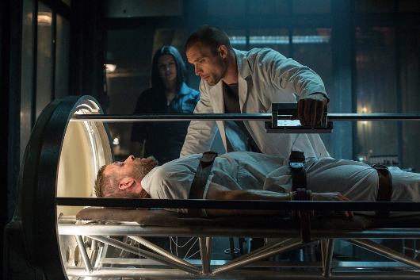

Film - Deadpool

Edward Skrein
Après une adolescence passée au sein d’un gang des bas-fonds londoniens, Ed Skrein décide de se reprendre en main à l’âge de 17 ans. Le jeune homme étudie à la Central Saint Martins College of Art and Design de Londres et se passionne pour la musique.
Il joue dans son premier long-métrage, Ill Manors, le film est tourné en 2012 et sort sur les écrans en avril 2013. Toujours en 2013, le charisme de l’acteur tape dans l’œil des producteurs de la série à succès Game of Thrones. A la recherche de la personne qui incarnera Daario Naharis, le fidèle serviteur de Daenerys Targaryen, ils jettent leur dévolu sur Ed Skrein qui se voit octroyer le rôle.
En 2015, le comédien renonce à Game of Thrones et au personnage de Daario Naharis et quitte la série ; il est remplacé par un autre acteur, Michiel Huisman. En effet, Skrein est engagé la même année pour prêter sa carrure au personnage de Frank Martin dans le reboot de la saga d’action Le Transporteur. L'athlétique acteur de 32 ans reprend le poste laissé vacant par le désormais ex-Transporteur, Jason Statham.